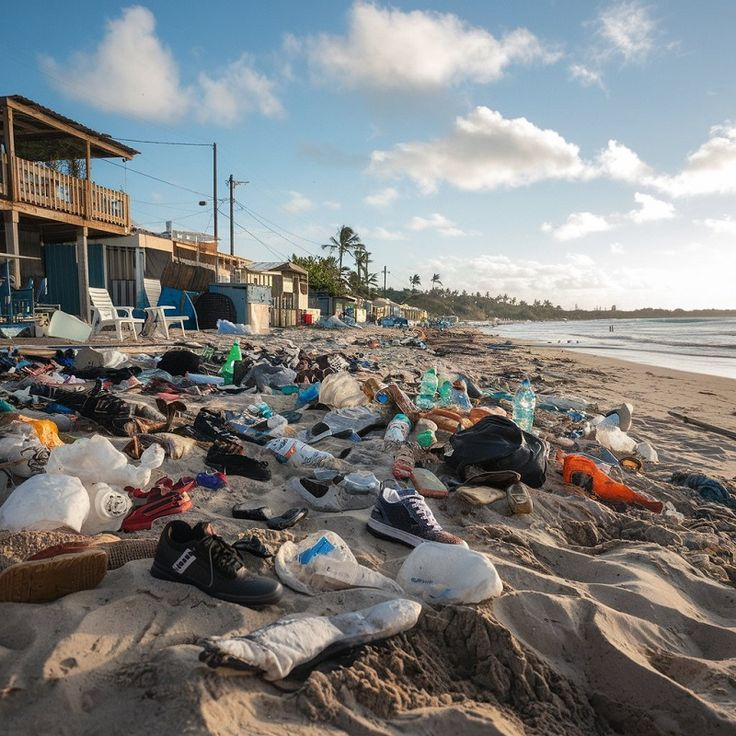

🥤 Sampah plastik dan limbah industri merupakan dua jenis pencemaran lingkungan yang sangat berdampak bagi kehidupan manusia dan ekosistem. Sampah plastik berasal dari berbagai produk sekali pakai seperti kantong plastik, botol, dan kemasan makanan yang sulit terurai secara alami. Akumulasi sampah plastik di lingkungan, terutama di laut dan sungai , dapat mengancam kehidupan hewan dan mencemari sumber air. Selain itu, plastik yang terurai menjadi mikroplastik juga berbahaya bagi kesehatan manusia karena dapat masuk ke dalam rantai makanan. 🌊🐠
ğŸ Sementara itu, limbah industri adalah hasil buangan dari proses produksi pabrik yang dapat berupa limbah cair, gas, maupun padat. Jika tidak diolah dengan baik, limbah ini dapat mencemari tanah, air, dan udara, menyebabkan berbagai masalah kesehatan serta kerusakan lingkungan. Beberapa limbah industri mengandung bahan kimia beracun yang dapat merusak ekosistem dan mengganggu keseimbangan alam. Oleh karena itu, pengelolaan sampah plastik dan limbah industri yang tepat, seperti daur ulang, pengolahan limbah, dan penerapan teknologi ramah lingkungan, sangat penting untuk menjaga kelestarian lingkungan. ♻️🗑️